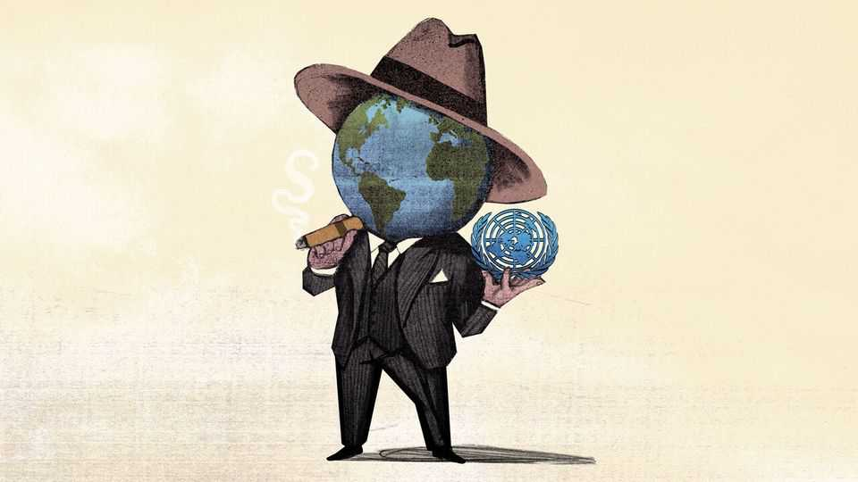

Al Capone would recognise today’s world order. That’s not good
In a gangsterish age, the UN needs an ultra-pragmatist as secretary-general

Aug 6th 2026
WHY DOES the United Nations still exist? The question is timely because the contest is now under way to choose the UN’s next secretary-general, before the two-term incumbent, António Guterres, steps down at the end of this year. There are seven declared candidates to date. Whoever wins will find the world in a gangsterish state.
Presidents Donald Trump and Vladimir Putin sound like mob bosses when they threaten to punish countries that fail to show respect. Extortion is a tool of foreign policy, as choke points generate protection rackets. When Iran seeks concessions from neighbours and adversaries by closing the Strait of Hormuz, or when America and China seek to win trade wars by controlling sales of prized technologies and inputs, they are acting like racketeers.
Unfortunately for the UN, the world’s most disruptive bullies, America, China and Russia, each enjoy a veto over its actions and top appointments, as permanent members of the Security Council. A pair of cash-strapped middle powers, Britain and France, are also members of the club of five permanent members, or P5. (The British and French try not to use their vetoes, though. In part they worry about the UN being paralysed by great-power squabbling. In part they know that their P5 rank is a legacy of their former importance, and others would strip it from them if they could.)
Thanks to those P5 vetoes, candidates to become secretary-general face a dilemma. Most of the 193 UN members resent the openly Mafiotic turn that the world has taken—even if lots of governments always suspected that might-makes-right was the true universal value. A silent majority of countries wants someone to defend the basic norms of the UN Charter, with its prohibitions on wars of aggression, invasions and crimes against humanity. But nobody can become secretary-general in the face of a P5 veto.
The Trump administration will not tolerate public criticism of America First power-grabs in Venezuela, threats to Greenland or legally dubious strikes on Iranian civilians. Mr Putin’s Russia does not want a secretary-general who condemns its lawbreaking, and indeed loathes Mr Guterres for criticising its invasion of Ukraine. China expects the UN to praise it as an engine of economic development, not to ask impertinent questions about repression or its coercive pursuit of territorial claims in its backyard.
That means working with the bullies. The global order may mimic the Chicago of the 1920s, but no UN body enjoys the same clout as the federal court that sent Al Capone down for tax evasion, bypassing the legions of local police, judges and politicians on the bootlegger’s payroll. At best, the next UN boss will resemble the reform-minded mayor or police chief of a gangster-infested metropolis. Whoever wins must take office with the blessing of tough power-brokers, then somehow use the position to do good. An expert on the UN, Richard Gowan of the International Crisis Group, describes a distinction that insiders make in New York, between a secretary-general who knows how to navigate great-power politics, and one who takes P5 orders.
By unofficial convention, it is Latin America’s turn to provide a secretary-general, and several countries have said they would like to see a woman in the role. Chile’s former president, Michelle Bachelet, is running. But the scuttlebutt at UN headquarters is that she is doomed. The Trump administration deems Ms Bachelet too hostile to American abortion laws, and not tough enough on Chinese human rights. July 30th saw the first straw poll of the 15 countries that sit on the security council. Three other candidates emerged as front-runners. In interviews and hustings over recent months, two of the most interesting, Rebeca Grynspan, a former vice-president of Costa Rica and boss of a development agency, UNCTAD, and Rafael Grossi, the Argentine chief of the International Atomic Energy Agency, the UN’s nuclear watchdog, have pitched strikingly realist, pragmatic visions of the job.
Ms Grynspan, who would be the first female and the first Jewish secretary-general, highlights her role in the Black Sea grain initiative, a 2022 deal to free up exports of food trapped by Russia’s war on Ukraine, easing a global price crunch. This was an example of how to do good works in a wicked world. Mr Putin was persuaded to let Ukraine export grain in return for UN help with Russian food and fertiliser exports, though he later abandoned the deal.
Mr Grossi talks of “the return of big-power politics”. His solution involves finding political space between competing parties, and enabling compromises that leaders may want to make. His calling card is the Zaporizhia nuclear power plant in Russian-occupied Ukraine, where he convinced the belligerents to allow access to UN inspectors. Some UN veterans distrust Mr Grossi. They fret about pledges they fear he might make to secure the Trump administration’s favour, while staying on good terms with Russia.
Though flawed, the UN still exists because it can be useful. It is a rare forum where officials from America, Russia and China still meet every day. Governments both scary and benign need to work on global scourges, from pandemics to climate change. The UN is able to convene them. It cannot solve all problems, but does provide unique legal legitimacy to deals struck by national governments, helping them stick. In a time of wars the organisation can help broker ceasefires and truces. The Security Council can send peacekeepers to monitor them. Beware the gangster’s peace, though, bought by trampling the weak. After years of blood-drenched gang wars, Capone once piously invited Chicago to give him “credit for the peace that now exists in the racket game”. A Capone-style peace in Ukraine or Gaza would be too costly. But nor can the strong be ignored. In a might-makes-right world, that may be the UN’s best hope: to nudge the mighty to do right. ■